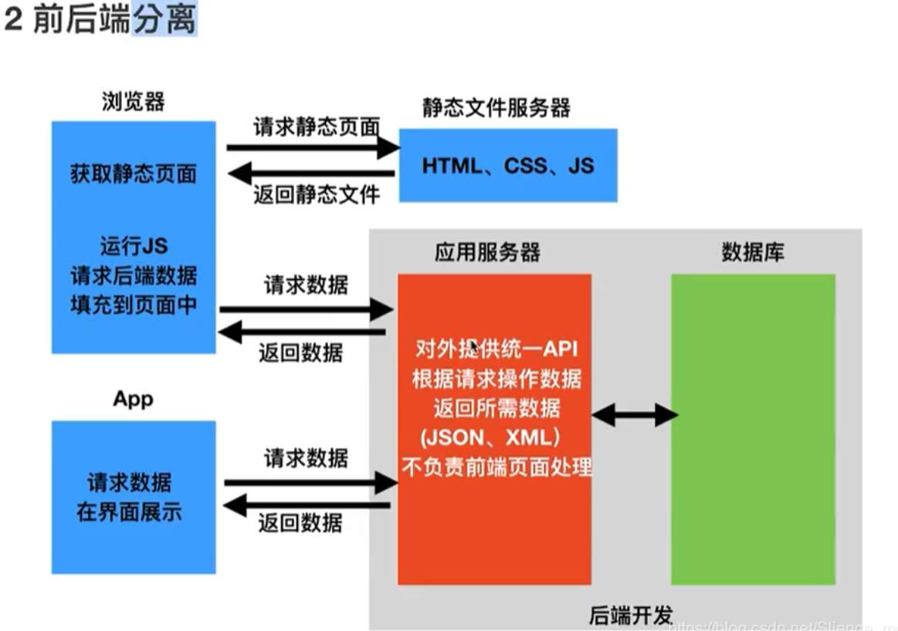
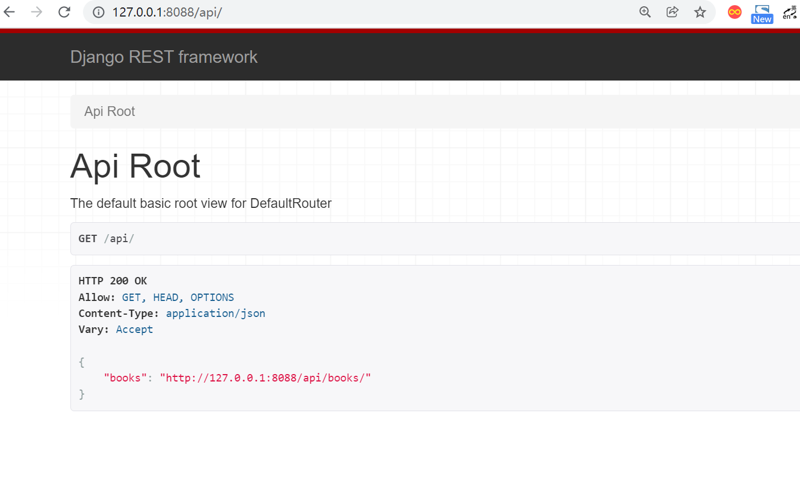
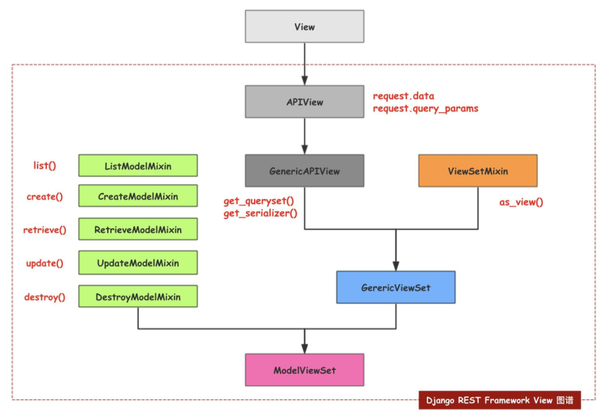
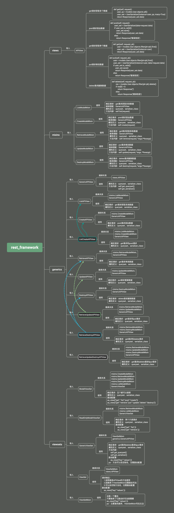

Contents
23.4.24. django-rest-framework学习¶
1. 引入DjangoRESTframework¶
1.1 Web应用模式¶
前后端不分离¶

前后端分离¶
在前后端分离的应用模式中，后端仅返回前端所需的数据，不在渲染HTML页面，不再控制前端的效果，至于前端用户看到什么效果，从后端的数据如何加载到前端，都由前端自己决定，
网页有网页的处理方式，APP有app的处理方式，但无论那种前端，所需的数据基本相同，后端仅需开发一套逻辑对外提供数据即可。
在前后端分离项目中，前端与后端的耦合度相对较低。
在前后端分离模式中，我们通常将后端开发的每个视图称为一个接口，或者API，前端通过访问接口对数据进行CURD（增删改查）
1.2 认识RESTful¶
在前后端分离的应用模式里，API接口如何定义？
参考：
1.3 RESTful设计方法¶
(1）如果是对同一个表进行数据操作（增、删、改、查），应该使用一条API，然后根据method的不同，进行不同的操作。
GET/POST/PUT/DELETE/PATCH
（2）面向资源编程，通过API提交的参数最好是名词，比如name，尽量少用动词。
http://www.abc.com/name
（3）体现版本，在API中加入像v1、v2这样的版本代号：
http://www.abc.com/v1/name
http://www.abc.com/v2/name
（4）体现API，让使用者一眼能看出这是API而不是URL，应该在API中加入提示：
http://www.abc.com/api/v1/name
http://www.abc.com/api/v2/name
（5）使用HTTPS，这一项原本是为了安全考虑，但是随着国内外互联网环境对安全性越来越重视，谷歌浏览器对所有不是HTTPS请求的链接全都会提示用户此链接为不安全链接，腾讯等平台也对小程序等产品强制要求使用HTTPS协议。不过，好在国内许多提供云服务的公司，像腾讯云、阿里云等，都提供免费的SSL证书，供开发者去申请。
https://www.abc.com/api/v1/name
https://www.abc.com/api/v2/name
（6）响应式设置状态码，例如，200和201代表操作成功，403代表权限不够，404代表没有指定资源，500代表运行时发现代码逻辑错误等。
return HttpResponse('adgbag',status=300)
（7）API的参数中加入筛选条件参数，也可以理解为获取资源优先选择GET的方式。
https://www.abc.com/api/v2/name?page=1&size=10
（8）返回值的规范，不同的method操作成功后，后端应该响应的返回值如下：
不同的提交方式代表对数据进行不同的操作：
GET：所有列表。
POST：新增的数据。
GET：单条数据。
PUT：更新，返回更新的数据。
PATCH：局部更新，返回更新的数据。
DELETE：删除，返回空文档。
https://www.abc.com/api/v1/name/1
（9）返回错误信息，应该加入错误代号code，让用户能直接看出是哪种类型的错误。
ret {
code:1000，
data:{
{'id':1,'title':'lala'}
}
}
（10）返回的详细信息，应该以字典的形式放在data中。
ret { code:1000，
data:{
{ 'id':1,
'title':'lala',
'detail':http://www.……
}
}
}
服务器返回的数据格式，应该尽量使用JSON，避免使用XML。
1.4 使用Django开发REST 接口¶
我们以在Django框架中使用的图书英雄案例来写一套支持图书数据增删改查的REST API接口，来理解REST API的开发。
在此案例中，前后端均发送JSON格式数据。
models.py
from django.db import models
# Create your models here.
# 定义英雄模型类HeroInfo
class BookInfo(models.Model):
btitle = models.CharField(max_length=20, verbose_name='名称')
bpub_date = models.DateField(verbose_name='发布日期')
bread = models.IntegerField(default=0, verbose_name='阅读量')
bcomment = models.IntegerField(default=0, verbose_name='评论量')
image = models.ImageField(upload_to='booktest', verbose_name='图片', null=True)
view.py
from datetime import datetime
from django.http import JsonResponse, HttpResponse
from django.views import View
from .models import BookInfo
import json
class BooksAPIVIew(View):
"""
查询所有图书、增加图书
"""
def get(self, request):
"""
查询所有图书
路由：GET /books/
"""
queryset = BookInfo.objects.all()
book_list = []
for book in queryset:
book_list.append({
'id': book.id,
'btitle': book.btitle,
'bpub_date': book.bpub_date,
'bread': book.bread,
'bcomment': book.bcomment,
'image': book.image.url if book.image else ''
})
return JsonResponse(book_list, safe=False)
def post(self, request):
"""
新增图书
路由：POST /books/
"""
json_bytes = request.body
json_str = json_bytes.decode()
book_dict = json.loads(json_str)
# 此处详细的校验参数省略
book = BookInfo.objects.create(
btitle=book_dict.get('btitle'),
bpub_date=datetime.strptime(book_dict.get('bpub_date'), '%Y-%m-%d').date()
)
return JsonResponse({
'id': book.id,
'btitle': book.btitle,
'bpub_date': book.bpub_date,
'bread': book.bread,
'bcomment': book.bcomment,
'image': book.image.url if book.image else ''
}, status=201)
class BookAPIView(View):
def get(self, request, pk):
"""
获取单个图书信息
路由： GET /books/<pk>/
"""
try:
book = BookInfo.objects.get(pk=pk)
except BookInfo.DoesNotExist:
return HttpResponse(status=404)
return JsonResponse({
'id': book.id,
'btitle': book.btitle,
'bpub_date': book.bpub_date,
'bread': book.bread,
'bcomment': book.bcomment,
'image': book.image.url if book.image else ''
})
def put(self, request, pk):
"""
修改图书信息
路由： PUT /books/<pk>
"""
try:
book = BookInfo.objects.get(pk=pk)
except BookInfo.DoesNotExist:
return HttpResponse(status=404)
json_bytes = request.body
json_str = json_bytes.decode()
book_dict = json.loads(json_str)
# 此处详细的校验参数省略
book.btitle = book_dict.get('btitle')
book.bpub_date = datetime.strptime(book_dict.get('bpub_date'), '%Y-%m-%d').date()
book.save()
return JsonResponse({
'id': book.id,
'btitle': book.btitle,
'bpub_date': book.bpub_date,
'bread': book.bread,
'bcomment': book.bcomment,
'image': book.image.url if book.image else ''
})
def delete(self, request, pk):
"""
删除图书
路由： DELETE /books/<pk>/
"""
try:
book = BookInfo.objects.get(pk=pk)
except BookInfo.DoesNotExist:
return HttpResponse(status=404)
book.delete()
return HttpResponse(status=204)
urls.py
#!/usr/bin/env python
# -*- coding:utf8 -*-
# auther; 18793
# Date：2022/3/14 12:22
# filename: urls.py
from django.urls import path
from django.urls import re_path
from . import views
urlpatterns = [
re_path(r'^books/$', views.BooksAPIVIew.as_view()),
re_path(r'^books/(?P<pk>\d+)/$', views.BookAPIView.as_view())
]
测试 使用Postman测试上述接口
1） 获取所有图书数据¶
GET 方式访问 http://127.0.0.1:8000/books/， 返回状态码200，数据如下
[
{
"id": 1,
"btitle": "雪山飞狐",
"bpub_date": "2022-03-14",
"bread": 100,
"bcomment": 100,
"image": "/home"
},
{
"id": 2,
"btitle": "笑傲江湖",
"bpub_date": "2022-03-14",
"bread": 10,
"bcomment": 10,
"image": "/"
},
{
"id": 3,
"btitle": "天龙八部",
"bpub_date": "2022-03-14",
"bread": 20,
"bcomment": 20,
"image": "/"
},
{
"id": 4,
"btitle": "连城诀",
"bpub_date": "2022-03-14",
"bread": 200,
"bcomment": 200,
"image": "/"
}
]
2）获取单一图书数据¶
GET 访问 http://127.0.0.1:8000/books/1/ ，返回状态码200， 数据如下
{
"id": 1,
"btitle": "雪山飞狐",
"bpub_date": "2022-03-14",
"bread": 100,
"bcomment": 100,
"image": "/home"
}
GET 访问http://127.0.0.1:8000/books/100/，返回状态码404
3）新增图书数据¶
POST 访问http://127.0.0.1:8000/books/，发送JSON数据：
{
"btitle": "三国演义",
"bpub_date": "1990-02-03"
}
返回状态码201，数据如下
{
"id": 5,
"btitle": "三国演义",
"bpub_date": "1990-02-03",
"bread": 0,
"bcomment": 0,
"image": ""
}
4）修改图书数据¶
PUT 访问http://127.0.0.1:8000/books/5/，发送JSON数据：
{
"btitle": "射雕英雄传",
"bpub_date": "1990-02-03"
}
返回状态码200，数据如下
{
"id": 5,
"btitle": "射雕英雄传",
"bpub_date": "1990-02-03",
"bread": 0,
"bcomment": 0,
"image": ""
}
5）删除图书数据¶
DELETE 访问http://127.0.0.1:8000/books/5/，返回204状态码
源码
view.py
import json
from django.http import JsonResponse, HttpResponse
from django.shortcuts import render
"""
GET /books/
POST /books/
GET /books/<pk>/
PUT /books/<pk>/
DELETE /books/<pk>/
响应数据 JSON
# 列表视图: 路由后边没有pk/ID
# 详情视图: 路由后面 pk/ID
"""
from django.views import View
from .models import BookInfo
class BookListView(View):
def get(self, request):
"""查询所有图书接口"""
# 1. 查询出所有图书模型
books = BookInfo.objects.all()
# 2. 遍历查询集，去除里边的每个书籍模型对象，把模型对象转换成字典
# 定义一个列表保存所有字典
book_list = []
for book in books:
book_dict = {
'id': book.id,
'btitle': book.btitle,
'bput_date': book.bpub_date,
'bread': book.bcomment,
'image': book.image.url if book.image else '',
}
book_list.append(book_dict) # 将转换好的字典添加到列表中
# 3. 响应给前端
# 如果book_;list 不是一个字典的话就需要将safe设置成False.
return JsonResponse(book_list, safe=False)
def post(self, request):
"""新增图书接口"""
# 获取前端传入的请求体数据(json) request.body
json_str_bytes = request.body
# 把bytes类型的json字符串转换成json_str
json_str = json_str_bytes.decode()
# 利用json.loads将json字符串扎UN干哈UN从json（字典/列表）
book_dict = json.loads(json_str)
# 创建模型对象并保存（把字典转换成模型并储存）
book = BookInfo(
btitle=book_dict['btitle'],
bpub_date=book_dict['bpub_date'],
)
book.save()
# 把新增的模型转换成字典
json_dict = {
'id': book.id,
'btitle': book.btitle,
'bput_date': book.bpub_date,
'bread': book.bread,
'bcomment':book.bcomment,
'image': book.image.url if book.image else '',
}
# 响应（把新增的数据再响应回去，201）
return JsonResponse(json_dict,status=201)
class BookDetailView(View):
"""详情视图"""
def get(self, request, pk):
"""查询指定某个图书馆接口"""
# 1. 获取出指定pk的那个模型对象
try:
book = BookInfo.objects.get(id=pk)
except BookInfo.DoesNotExist:
return HttpResponse({'message': '查询的数据不存在'}, status=404)
# 2. 模型对象转字典
book_dict = {
'id': book.id,
'btitle': book.btitle,
'bput_date': book.bpub_date,
'bread': book.bread,
'bcomment':book.bcomment,
'image': book.image.url if book.image else '',
}
# 3. 响应
return JsonResponse(book_dict)
def put(self, request, pk):
"""修改指定图书馆接口"""
# 先查询要修改的模型对象
try:
book = BookInfo.objects.get(pk=pk)
except BookInfo.DoesNotExist:
return HttpResponse({'message': '查询的数据不存在'}, status=404)
# 获取前端传入的新数据（把数据转换成字典）
# json_str_bytes = request.body
# json_str = json_str_bytes.decode()
# book_dict = json.loads(json_str)
book_dict = json.loads(request.body.decode())
# 重新给模型指定的属性赋值
book.btitle = book_dict['btitle']
book.bpub_date = book_dict['bpub_date']
# 调用save方法进行修改操作
book.save()
# 把修改后的模型再转换成字典
json_dict = {
'id': book.id,
'btitle': book.btitle,
'bput_date': book.bpub_date,
'bread': book.bread,
'bcomment': book.bcomment,
'image': book.image.url if book.image else '',
}
# 响应
return JsonResponse(json_dict)
def delete(self, request, pk):
"""删除指定图书接口"""
# 获取要删除的模型对象
try:
book = BookInfo.objects.get(id=pk)
except BookInfo.DoesNotExist:
return HttpResponse({'message':'查询的数据不存在'},status=404)
# 删除指定模型对象
book.delete() # 物理删除（真正从数据库删除）
# book.is_delete = True
# book.save() # （逻辑删除）
# 响应：删除时不需要有响应体但要指定状态码为 204
return HttpResponse(status=204)
models.py
from django.db import models
# Create your models here.
# 定义图书模型类BookInfo
class BookInfo(models.Model):
btitle = models.CharField(max_length=20, verbose_name='名称')
bpub_date = models.DateField(verbose_name='发布日期')
bread = models.IntegerField(default=0, verbose_name='阅读量')
bcomment = models.IntegerField(default=0, verbose_name='评论量')
is_delete = models.BooleanField(default=False, verbose_name='逻辑删除')
# 注意,如果模型已经迁移建表并且表中如果已经有数据了,那么后新增的字段,必须给默认值或可以为空,不然迁移就报错
# upload_to 指定上传到media_root配置项的目录中再创建booktest里面
image = models.ImageField(upload_to='booktest', verbose_name='图片', null=True)
class Meta:
db_table = 'tb_books' # 指明数据库表名
verbose_name = '图书' # 在admin站点中显示的名称
verbose_name_plural = verbose_name # 显示的复数名称
def __str__(self):
"""定义每个数据对象的显示信息"""
return self.btitle
def pub_date_format(self):
return self.bpub_date.strftime('%Y-%m-%d')
# 修改方法名在列表界面的展示
pub_date_format.short_description = '发布日期'
# 指定自定义方法的排序依据
pub_date_format.admin_order_field = 'bpub_date'
# 定义英雄模型类HeroInfo
class HeroInfo(models.Model):
GENDER_CHOICES = (
(0, 'female'),
(1, 'male')
)
hname = models.CharField(max_length=20, verbose_name='名称')
hgender = models.SmallIntegerField(choices=GENDER_CHOICES, default=0, verbose_name='性别')
hcomment = models.CharField(max_length=200, null=True, verbose_name='描述信息')
hbook = models.ForeignKey(BookInfo, on_delete=models.CASCADE, verbose_name='图书') # 外键
is_delete = models.BooleanField(default=False, verbose_name='逻辑删除')
class Meta:
db_table = 'tb_heros'
verbose_name = '英雄'
verbose_name_plural = verbose_name
def __str__(self):
return self.hname
def read(self):
return self.hbook.bread
read.short_description = '阅读量'
read.admin_order_field = 'hbook__bread'
# HeroInfo.objects.filter(hbook__bread=xx)
urls.py
from django.conf.urls import url
from django.urls import path
from . import views
urlpatterns = [
# 列表视图的路由
url(r'^books/$', views.BookListView.as_view()),
# 详情视图的路由
url(r'^books/(?P<pk>\d+)/$', views.BookDetailView.as_view()),
]
settings.py
# 配置项目中静态文件存放/读取目录
STATICFILES_DIRS = [
# http://127.0.0.1:8000/static/index.html
# http://127.0.0.1:8000/static/mm03.jpg
os.path.join(BASE_DIR, 'static_files'),
os.path.join(BASE_DIR, 'static_files/good'),
]
# 指定上传文件存储目录
MEDIA_ROOT=os.path.join(BASE_DIR,"static_files/media")
DATABASES = {
'default': {
'ENGINE': 'django.db.backends.mysql',
'NAME': 'book', # 数据库名称
'HOST': '127.0.0.1', # 服务器
'PORT': '3306',
'USER': 'root',
'PASSWORD': 'OSChina@2020', # 密码
"OPTIONS": {"init_command": "SET default_storage_engine=INNODB;"}
}
}
1.5 明确REST接口开发的核心任务¶
分析一下上节的案例，可以发现，在开发REST API接口时，视图中做的最主要有三件事：
1.将请求的数据（如JSON格式）转换为模型类对象
2.操作数据库
3.将模型类对象转换为响应的数据（如JSON格式）
序列化Serialization¶
简而言之，我们可以将序列化理解为：
将程序中的一个数据结构类型转换为其他格式（字典、JSON、XML等），例如将Django中的模型类对象装换为JSON字符串，这个转换过程我们称为序列化。
queryset = BookInfo.objects.all()
book_list = []
# 序列化
for book in queryset:
book_list.append({
'id': book.id,
'btitle': book.btitle,
'bpub_date': book.bpub_date,
'bread': book.bread,
'bcomment': book.bcomment,
'image': book.image.url if book.image else ''
})
return JsonResponse(book_list, safe=False)
反之，将其他格式（字典、JSON、XML等）转换为程序中的数据，例如将JSON字符串转换为Django中的模型类对象，这个过程我们称为反序列化。
json_bytes = request.body
json_str = json_bytes.decode()
# 反序列化
book_dict = json.loads(json_str)
book = BookInfo.objects.create(
btitle=book_dict.get('btitle'),
bpub_date=datetime.strptime(book_dict.get('bpub_date'), '%Y-%m-%d').date()
)
我们可以看到，在开发REST API时，视图中要频繁的进行序列化与反序列化的编写。
总结 在开发REST API接口时，我们在视图中需要做的最核心的事是：
将数据库数据序列化为前端所需要的格式，并返回；
将前端发送的数据反序列化为模型类对象，并保存到数据库中
1.6 Django REST framework 简介¶
在序列化与反序列化时，虽然操作的数据不尽相同，但是执行的过程却是相似的，也就是说这部分代码是可以复用简化编写的。
在开发RESTAPI的视图中，虽然每个视图具体操作的数据不同，但增、删、改、查的实现流程基本套路化，所以这部分代码也是可以复用简化编写的：
增：校验请求数据 -> 执行反序列化过程 -> 保存数据库 -> 将保存的对象序列化并返回
删：判断要删除的数据是否存在 ->执行数据库删除
改：判断要修改的数据是否存在 -> 校验请求的数据 -> 执行反序列化过程 -> 保存数据库 -> 将保存的对象序列化并返回
查：查询数据库 -> 将数据序列化并返回
Django REST framework可以帮助我们简化上述两部分的代码编写，大大提高REST API的开发速度。
认识Django REST framework
Django REST framework 框架是一个用于构建Web API 的强大而又灵活的工具。
通常简称为DRF框架 或 REST framework。
DRF框架是建立在Django框架基础之上，由Tom Christie大牛二次开发的开源项目。
特点
提供了定义序列化器Serializer的方法，可以快速根据 Django ORM 或者其它库自动序列化/反序列化；
提供了丰富的类视图、Mixin扩展类，简化视图的编写；
丰富的定制层级：函数视图、类视图、视图集合到自动生成 API， 满足各种需要；
多种身份认证和权限认证方式的支持；
内置了限流系统；
直观的 API web 界面；
可扩展性，插件丰富
2. DRF工程搭建¶
2.1 环境安装与配置¶
DRF需要以下依赖：
Python (2.7, 3.4, 3.5, 3.6, 3.7)
Django (1.11, 2.0, 2.1)
1.安装DRF, 建议安装如下组合套装
pip install Djangorestframework markdown Django-filter pillow Django-guardian coreapi -i "https://pypi.doubanio.com/simple/"
2.添加rest_framework应用
INSTALLED_APPS = [
'django.contrib.admin',
'django.contrib.auth',
'django.contrib.contenttypes',
'django.contrib.sessions',
'django.contrib.messages',
'django.contrib.staticfiles',
'app01.apps.App01Config',
'rest_framework'
]
2.2 见识DRF的魅力¶
2.2.1 创建序列化器¶
在booktest应用中新建serializers.py用于保存该应用的序列化器。 创建一个BookInfoSerializer用于序列化与反序列化。
#!/usr/bin/env python
# -*- coding:utf8 -*-
# auther; 18793
# Date：2022/3/14 12:18
# filename: serializer.py
from rest_framework import serializers
from .models import BookInfo
class BookInfoSerializer(serializers.ModelSerializer):
"""图书数据序列化器"""
class Meta:
model = BookInfo
fields = '__all__'
model 指明该序列化器处理的数据字段从模型类BookInfo参考生成
fields 指明该序列化器包含模型类中的哪些字段，’all’指明包含所有字段
2.2.2 编写视图¶
在booktest应用的views.py中创建视图BookInfoViewSet，这是一个视图集合。
from rest_framework.viewsets import ModelViewSet
from .serializer import BookInfoSerializer
from .models import BookInfo
class BookInfoViewSet(ModelViewSet):
queryset = BookInfo.objects.all()
serializer_class = BookInfoSerializer
queryset 指明该视图集在查询数据时使用的查询集
serializer_class 指明该视图在进行序列化或反序列化时使用的序列化器
2.2.3 定义路由¶
在app01应用的urls.py中定义路由信息。
#!/usr/bin/env python
# -*- coding:utf8 -*-
# auther; 18793
# Date：2022/3/14 12:22
# filename: urls.py
from django.urls import path
from django.urls import re_path
from . import views
from rest_framework.routers import DefaultRouter
router = DefaultRouter()
router.register('books', views.BookInfoViewSet)
urlpatterns = []
urlpatterns += router.urls
2.2.4 运行测试¶
运行当前程序（与运行Django一样）
python manage.py runserver
在浏览器中输入网址127.0.0.1:8000，可以看到DRF提供的API Web浏览页面：
1）点击链接127.0.0.1:8000/api/books/ 可以访问获取所有数据的接口—（get 查所有）
2）在页面底下表单部分填写图书信息，可以访问添加新图书的接口，保存新书—（post 新建）
3）在浏览器中输入网址127.0.0.1:8000/books/1/，可以访问获取单一图书信息的接口（id为1的图书）—（get 查单个）
4）在页面底部表单中填写图书信息，可以访问修改图书的接口—（put –更新）
5） 在浏览器中输入网址127.0.0.1:8000/books/6/，可以删除单个图书信息 —-（delete 删单个）
至此，是不是发现Django REST framework很好用！
3. Serializer序列化器¶
序列化器的作用：
进行数据的校验
对数据对象进行转换
3.1 定义Serializer¶
1. 定义方法¶
Django REST framework中的Serializer使用类来定义，须继承自rest_framework.serializers.Serializer。
例如，我们已有了一个数据库模型类BookInfo
class BookInfo(models.Model):
btitle = models.CharField(max_length=20, verbose_name='名称')
bpub_date = models.DateField(verbose_name='发布日期')
bread = models.IntegerField(default=0, verbose_name='阅读量')
bcomment = models.IntegerField(default=0, verbose_name='评论量')
image = models.ImageField(upload_to='booktest', verbose_name='图片', null=True)
我们想为这个模型类提供一个序列化器，可以定义如下：
class BookInfoSerializer(serializers.Serializer):
"""图书数据序列化器"""
id = serializers.IntegerField(label='ID', read_only=True)
btitle = serializers.CharField(label='名称', max_length=20)
bpub_date = serializers.DateField(label='发布日期', required=True)
bread = serializers.IntegerField(label='阅读量', required=False)
bcomment = serializers.IntegerField(label='评论量', required=False)
image = serializers.ImageField(label='图片', required=False)
注意：serializer不是只能为数据库模型类定义，也可以为非数据库模型类的数据定义。serializer是独立于数据库之外的存在。
3.2 字段与选项¶
参考
https://q1mi.github.io/Django-REST-framework-documentation/api-guide/fields_zh/
3.3 创建Serializer对象¶
定义好Serializer类后，就可以创建Serializer对象了。
Serializer的构造方法为：
Serializer(instance=None, data=empty, **kwarg)
说明：
1）用于序列化时，将模型类对象传入instance参数
2）用于反序列化时，将要被反序列化的数据传入data参数
3）除了instance和data参数外，在构造Serializer对象时，还可通过context参数额外添加数据，如
serializer = AccountSerializer(account, context={'request': request})
通过context参数附加的数据，可以通过Serializer对象的context属性获取。
3.4 序列化使用¶
我们在django shell中来学习序列化器的使用。
python manage.py shell
1 基本使用¶
1） 先查询出一个图书对象
from booktest.models import BookInfo
book = BookInfo.objects.get(id=2)
2） 构造序列化器对象
from booktest.serializers import BookInfoSerializer
serializer = BookInfoSerializer(book)
3）获取序列化数据 通过data属性可以获取序列化后的数据
serializer.data
# {'id': 2, 'btitle': '天龙八部', 'bpub_date': '1986-07-24', 'bread': 36, 'bcomment': 40, 'image': None}
4）如果要被序列化的是包含多条数据的查询集QuerySet，可以通过添加many=True参数补充说明
book_qs = BookInfo.objects.all()
serializer = BookInfoSerializer(book_qs, many=True)
serializer.data
# [OrderedDict([('id', 2), ('btitle', '天龙八部'), ('bpub_date', '1986-07-24'), ('bread', 36), ('bcomment', 40), ('image', N]), OrderedDict([('id', 3), ('btitle', '笑傲江湖'), ('bpub_date', '1995-12-24'), ('bread', 20), ('bcomment', 80), ('image'ne)]), OrderedDict([('id', 4), ('btitle', '雪山飞狐'), ('bpub_date', '1987-11-11'), ('bread', 58), ('bcomment', 24), ('ima None)]), OrderedDict([('id', 5), ('btitle', '西游记'), ('bpub_date', '1988-01-01'), ('bread', 10), ('bcomment', 10), ('im', 'booktest/xiyouji.png')])]
2.序列化的方式¶
2.1 serializers.Serializer¶
示例
serializers.py
from rest_framework import serializers
from .models import UserProfile,Book
class BookSerializer(serializers.Serializer):
title=serializers.CharField(required=True,max_length=100)
isbn=serializers.CharField(required=True,max_length=100)
author=serializers.CharField(required=True,max_length=100)
publish=serializers.CharField(required=True,max_length=100)
rate=serializers.FloatField(default=0)
2.2 serializers.ModelSerializer¶
ModelSerializer与常规的Serializer相同，但提供了：
基于模型类自动生成一系列字段
包含默认的create()和update()的实现
1.定义¶
serializers.py
from rest_framework import serializers
from .models import UserProfile,Book
class BookModelSerializer(serializers.ModelSerializer):
class Meta:
model = Book
fields="__all__" #将整个表的所有字段都序列化
model 指明参照哪个模型类
fields 指明为模型类的哪些字段生成
2.指定字段¶
1. 使用fields来明确字段，__all__表名包含所有字段，也可以写明具体哪些字段
fields = __all__
2. 使用exclude可以明确排除掉哪些字段
exclude = ('image',)
3.显示指明字段
fields = ('id', 'hname', 'hgender', 'hcomment', 'hbook')
4.指明只读字段
fields = ('id', 'btitle', 'bpub_date'， 'bread', 'bcomment')
read_only_fields = ('id', 'bread', 'bcomment')
class BookInfoSerializer(serializers.ModelSerializer):
"""图书数据序列化器"""
class Meta:
model = BookInfo
fields = ('id', 'btitle', 'bpub_date')
class BookInfoSerializer(serializers.ModelSerializer):
"""图书数据序列化器"""
class Meta:
model = BookInfo
fields = ('id', 'btitle', 'bpub_date','bread', 'bcomment')
read_only_fields = ('id', 'bread', 'bcomment')
3.添加额外参数¶
我们可以使用extra_kwargs参数为ModelSerializer添加或修改原有的选项参数
class BookInfoSerializer(serializers.ModelSerializer):
"""图书数据序列化器"""
class Meta:
model = BookInfo
fields = ('id', 'btitle', 'bpub_date', 'bread', 'bcomment')
extra_kwargs = {
'bread': {'min_value': 0, 'required': True},
'bcomment': {'min_value': 0, 'required': True},
}
# BookInfoSerializer():
# id = IntegerField(label='ID', read_only=True)
# btitle = CharField(label='名称', max_length=20)
# bpub_date = DateField(allow_null=True, label='发布日期', required=False)
# bread = IntegerField(label='阅读量', max_value=2147483647, min_value=0, required=True)
# bcomment = IntegerField(label='评论量', max_value=2147483647, min_value=0, required=True)
4.总结¶
Serializer和ModelSerializer两种序列化方式中，前者比较容易理解，适用于新手；后者则在商业项目中被使用的更多，在实际开发中建议大家多使用后者。
许多教材中都将Django REST framework的Serializer和ModelSerializer，与Django的Form和ModelForm做对比，虽然二者相似，在优劣选择上却是不同的
ModelSerializer有Serializer所有的优点，同时并没有比Serializer明显的不足之外，所以ModelSerializer比Serializer更优。
4. 视图¶
4.1 Request 与 Response¶
1. Request¶
REST framework 传入视图的request对象不再是Django默认的HttpRequest对象，而是REST framework提供的扩展了HttpRequest类的Request类的对象。
REST framework提供了Parser解析器，在接收到请求后会自动根据Content-Type指明的请求数据类型（如JSON、表单等）将请求数据进行parse解析，解析为类字典对象保存到Request对象中。
Request对象的数据是自动根据前端发送数据的格式进行解析之后的结果。
无论前端发送的哪种格式的数据，我们都可以以统一的方式读取数据。
常用属性¶
1）.data¶
request.data 返回解析之后的请求体数据。类似于Django中标准的request.POST和 request.FILES属性，但提供如下特性：
包含了解析之后的文件和非文件数据
包含了对POST、PUT、PATCH请求方式解析后的数据
利用了REST framework的parsers解析器，不仅支持表单类型数据，也支持JSON数据
2）.query_params¶
request.query_params与Django标准的request.GET相同，只是更换了更正确的名称而已。
2. Response¶
rest_framework.response.Response
REST framework提供了一个响应类Response，使用该类构造响应对象时，响应的具体数据内容会被转换（render渲染）成符合前端需求的类型。
REST framework提供了Renderer渲染器，用来根据请求头中的Accept（接收数据类型声明）来自动转换响应数据到对应格式。如果前端请求中未进行Accept声明，则会采用默认方式处理响应数据，我们可以通过配置来修改默认响应格式。
REST_FRAMEWORK = {
'DEFAULT_RENDERER_CLASSES': ( # 默认响应渲染类
'rest_framework.renderers.JSONRenderer', # json渲染器
'rest_framework.renderers.BrowsableAPIRenderer', # 浏览API渲染器
)
}
构造方式¶
Response(data, status=None, template_name=None, headers=None, content_type=None)
data数据不要是render处理之后的数据，只需传递python的内建类型数据即可，REST framework会使用renderer渲染器处理data。
data不能是复杂结构的数据，如Django的模型类对象，对于这样的数据我们可以使用Serializer序列化器序列化处理后（转为了Python字典类型）再传递给data参数。 参数说明：
data: 为响应准备的序列化处理后的数据；
status: 状态码，默认200；
template_name: 模板名称，如果使用HTMLRenderer 时需指明；
headers: 用于存放响应头信息的字典；
content_type: 响应数据的Content-Type，通常此参数无需传递，REST framework会根据前端所需类型数据来设置该参数。
常用属性：¶
1）.data
传给response对象的序列化后，但尚未render处理的数据
2）.status_code
状态码的数字
3）.content
经过render处理后的响应数据
3. 状态码¶
为了方便设置状态码，REST framewrok在rest_framework.status模块中提供了常用状态码常量。
1）信息告知 - 1xx
HTTP_100_CONTINUE HTTP_101_SWITCHING_PROTOCOLS
2）成功 - 2xx
HTTP_200_OK HTTP_201_CREATED HTTP_202_ACCEPTED HTTP_203_NON_AUTHORITATIVE_INFORMATION HTTP_204_NO_CONTENT HTTP_205_RESET_CONTENT HTTP_206_PARTIAL_CONTENT HTTP_207_MULTI_STATUS
3）重定向 - 3xx
HTTP_300_MULTIPLE_CHOICES HTTP_301_MOVED_PERMANENTLY HTTP_302_FOUND HTTP_303_SEE_OTHER HTTP_304_NOT_MODIFIED HTTP_305_USE_PROXY HTTP_306_RESERVED HTTP_307_TEMPORARY_REDIRECT
4）客户端错误 - 4xx
HTTP_400_BAD_REQUEST HTTP_401_UNAUTHORIZED HTTP_402_PAYMENT_REQUIRED HTTP_403_FORBIDDEN HTTP_404_NOT_FOUND HTTP_405_METHOD_NOT_ALLOWED HTTP_406_NOT_ACCEPTABLE HTTP_407_PROXY_AUTHENTICATION_REQUIRED HTTP_408_REQUEST_TIMEOUT HTTP_409_CONFLICT HTTP_410_GONE HTTP_411_LENGTH_REQUIRED HTTP_412_PRECONDITION_FAILED HTTP_413_REQUEST_ENTITY_TOO_LARGE HTTP_414_REQUEST_URI_TOO_LONG HTTP_415_UNSUPPORTED_MEDIA_TYPE HTTP_416_REQUESTED_RANGE_NOT_SATISFIABLE HTTP_417_EXPECTATION_FAILED HTTP_422_UNPROCESSABLE_ENTITY HTTP_423_LOCKED HTTP_424_FAILED_DEPENDENCY HTTP_428_PRECONDITION_REQUIRED HTTP_429_TOO_MANY_REQUESTS HTTP_431_REQUEST_HEADER_FIELDS_TOO_LARGE HTTP_451_UNAVAILABLE_FOR_LEGAL_REASONS
5）服务器错误 - 5xx
HTTP_500_INTERNAL_SERVER_ERROR HTTP_501_NOT_IMPLEMENTED HTTP_502_BAD_GATEWAY HTTP_503_SERVICE_UNAVAILABLE HTTP_504_GATEWAY_TIMEOUT HTTP_505_HTTP_VERSION_NOT_SUPPORTED HTTP_507_INSUFFICIENT_STORAGE HTTP_511_NETWORK_AUTHENTICATION_REQUIRED
4.2 视图概览¶
REST framework 提供了众多的通用视图基类与扩展类，以简化视图的编写。
视图的继承关系：
4.2.1 2个视图基类¶
APIView¶
APIView 是REST framework提供的所有视图的基类，继承自Django的View父类。
from rest_framework.views import APIView
APIView与View的不同之处在于：
传入到视图方法中的是REST framework的Request对象，而不是Django的HttpRequeset对象；
视图方法可以返回REST framework的Response对象，视图会为响应数据设置（render）符合前端要求的格式；
任何APIException异常都会被捕获到，并且处理成合适的响应信息；
在进行dispatch()分发前，会对请求进行身份认证、权限检查、流量控制。
支持定义的类属性
authentication_classes 列表或元祖，身份认证类
permissoin_classes 列表或元祖，权限检查类
throttle_classes 列表或元祖，流量控制类
在APIView中仍以常规的类视图定义方法来实现get() 、post() 或者其他请求方式的方法
GenericAPIView[通用视图类]¶
继承自APIVIew，主要增加了操作序列化器和数据库查询的方法，作用是为下面Mixin扩展类的执行提供方法支持。通常在使用时，可搭配一个或多个Mixin扩展类。
from rest_framework.generics import GenericAPIView
GenericAPIView(APIView):做了一些封装
-属性：
queryset # 要序列化的数据
serializer_class # 指明视图使用的序列化器
-方法：
get_queryset：获取qs数据(返回视图使用的查询集，主要用来提供给Mixin扩展类使用，
是列表视图与详情视图获取数据的基础，默认返回queryset属性)
get_object：获取一条数据的对象(返回详情视图所需的模型类数据对象，主要用来
提供给Mixin扩展类使用。在试图中可以调用该方法获取详情信息的模型类对象)
get_serializer：以后使用它来实例化得到ser对象(返回序列化器对象，主要用来
提供给Mixin扩展类使用，如果我们在视图中想要获取序列化器对象，也可以直接调用此方法)
get_serializer_class：获取序列化类，注意跟上面区分
4.2.2 5个视图扩展类¶
作用：
提供了几种后端视图（对数据资源进行曾删改查）处理流程的实现，如果需要编写的视图属于这五种，则视图可以通过继承相应的扩展类来复用代码，减少自己编写的代码量。
这五个扩展类需要搭配GenericAPIView父类，因为五个扩展类的实现需要调用GenericAPIView提供的序列化器与数据库查询的方法。
1 查所有：ListModelMixin
列表视图扩展类，提供list(request, *args, **kwargs)方法快速实现列表视图，返回200状态码。
该Mixin的list方法会对数据进行过滤和分页。
2 查一个：RetrieveModelMixin
创建视图扩展类，提供create(request, *args, **kwargs)方法快速实现创建资源的视图，成功返回201状态码。
如果序列化器对前端发送的数据验证失败，返回400错误。
3 增一个：CreateModelMixin
详情视图扩展类，提供retrieve(request, *args, **kwargs)方法，可以快速实现返回一个存在的数据对象。
如果存在，返回200， 否则返回404
4 改一个：UpdateModelMixin
更新视图扩展类，提供update(request, *args, **kwargs)方法，可以快速实现更新一个存在的数据对象。
同时也提供partial_update(request, *args, **kwargs)方法，可以实现局部更新。
成功返回200，序列化器校验数据失败时，返回400错误。
5 删一个：DestroyModelMixin
删除视图扩展类，提供destroy(request, *args, **kwargs)方法，可以快速实现删除一个存在的数据对象
成功返回204，不存在返回404。
4.2.3 9个视图子类¶
1）查所有：ListAPIView
提供 get 方法
继承自：GenericAPIView、ListModelMixin
2）增一个：CreateAPIView
提供 post 方法
继承自： GenericAPIView、CreateModelMixin
3）查所有+增一个：ListCreateAPIView
提供 get 和 post 方法
继承自： GenericAPIView、ListModelMixin、CreateModelMixin
4）查一个：RetrieveAPIView
提供 get 方法
继承自: GenericAPIView、RetrieveModelMixin
5）改一个：UpdateAPIView
提供 put 和 patch 方法
继承自：GenericAPIView、UpdateModelMixin
6）删一个：DestoryAPIView
提供 delete 方法
继承自：GenericAPIView、DestoryModelMixin
7）查一个+改一个：RetrieveUpdateAPIView
提供 get、put、patch方法
继承自： GenericAPIView、RetrieveModelMixin、UpdateModelMixin
8）查一个+删一个：RetrieveDestroyAPIView
提供 get 和 delete 方法
继承自： GenericAPIView、RetrieveModelMixin、DestoryModelMixin
9） 查一个+改一个+删一个：RetrieveUpdateDestoryAPIView
提供 get、put、patch、delete方法
继承自：GenericAPIView、RetrieveModelMixin、UpdateModelMixin、DestoryModelMixin
4.2.4 视图类的使用¶
下面把APIView 、GenericAPIView、5个视图扩展类、9个视图子类分四层来做演示
模型层¶
models.py
from django.db import models
class Book(models.Model):
nid = models.AutoField(primary_key=True)
name = models.CharField(max_length=32, verbose_name='书名')
price = models.DecimalField(max_digits=5, decimal_places=2, verbose_name='价格')
publish_date = models.DateField(verbose_name='出版时间')
publish = models.ForeignKey(to='Publish',to_field='nid',on_delete=models.CASCADE)
authors=models.ManyToManyField(to='Author')
class Meta:
verbose_name_plural = '书籍表'
def __str__(self):
return self.name
class Author(models.Model):
nid = models.AutoField(primary_key=True)
name = models.CharField(max_length=32, verbose_name='名字')
age = models.IntegerField(verbose_name='年龄')
author_detail = models.OneToOneField(to='AuthorDetail',to_field='nid',unique=True,on_delete=models.CASCADE)
class Meta:
verbose_name_plural = '作者表'
def __str__(self):
return self.name
class AuthorDetail(models.Model):
nid = models.AutoField(primary_key=True)
telephone = models.BigIntegerField(verbose_name='电话')
birthday = models.DateField(verbose_name='生日')
addr = models.CharField(max_length=64, verbose_name='地址')
class Meta:
verbose_name_plural = '作者详情表'
class Publish(models.Model):
nid = models.AutoField(primary_key=True)
name = models.CharField(max_length=32, verbose_name='社名')
city = models.CharField(max_length=32, verbose_name='地址')
email = models.EmailField(verbose_name='邮箱')
class Meta:
verbose_name_plural = '出版社表'
def __str__(self):
return self.name
路由层¶
urls.py
from django.contrib import admin
from django.urls import path
from app01 import views
urlpatterns = [
path('admin/', admin.site.urls),
# 查询所有书籍，新增一本书籍
path('book/', views.BookView.as_view()),
# 查询，修改，删除单本书籍
path('book/<int:pk>/', views.BookSingleView.as_view()),
# 查询所有作者，增加一个作者
path('author/', views.AuthorView.as_view()),
# 查询，修改，删除单个作者
path('author/<int:pk>/', views.AuthorSingleView.as_view()),
# 查询所有作者详情，新增一个作者详情
path('authordetail/', views.AuthorDetailView.as_view()),
# 查询，修改，删除单个作者详情
path('authordetail/<int:pk>/', views.AuthorDetailSingleView.as_view()),
# 查询所有出版社，新增一个出版社
path('publish/', views.PublishView.as_view()),
# 查询，修改，删除单个出版社
path('publish/<int:pk>/', views.PublishSingleView.as_view()),
]
视图层¶
views.py
from rest_framework.response import Response
from app01 import serializer
from app01 import models
************************** 第一层：继承APIview **************************
from rest_framework.views import APIView
# 查询所有书籍，增加书籍
class BookView(APIView):
def get(self, request):
books = models.Book.objects.all()
ser = serializer.BookModelSerializer(instance=books, many=True)
return Response(ser.data)
def post(self, request):
ser = serializer.BookModelSerializer(data=request.data)
if ser.is_valid():
# 直接保存，保存到哪个表里？需要重写save
ser.save()
return Response(ser.data)
return Response(ser.errors)
# 查询，修改，删除单本书籍
class BookSingleView(APIView):
def get(self, request, *args, **kwargs):
book = models.Book.objects.filter(pk=kwargs.get('pk')).first()
ser = serializer.BookModelSerializer(instance=book)
print(ser.instance)
return Response(ser.data)
def put(self, request, *args, **kwargs):
book = models.Book.objects.filter(pk=kwargs.get('pk')).first()
ser = serializer.BookModelSerializer(instance=book, data=request.data)
if ser.is_valid():
ser.save()
return Response(ser.data)
else:
return Response('数据校验有误')
def delete(self, request, *args, **kwargs):
book = models.Book.objects.filter(pk=kwargs.get('pk')).delete()
print(book)
if book[0] > 0:
return Response('')
else:
return Response('要删的不存在')
# 查询所有作者，增加作者
class AuthorView(APIView):
def get(self,request):
author = models.Author.objects.all()
ser = serializer.AuthorModelSerializer(instance=author,many=True)
return Response(ser.data)
def post(self,request):
ser = serializer.AuthorModelSerializer(data=request.data)
if ser.is_valid():
ser.save()
return Response(ser.data)
return Response(ser.errors)
# 查询，修改，删除单个作者
class AuthorSingleView(APIView):
def get(self,request, *args, **kwargs):
author = models.Author.objects.filter(pk=kwargs.get('pk')).first()
ser = serializer.AuthorModelSerializer(instance=author)
return Response(ser.data)
def put(self, request, *args, **kwargs):
author = models.Author.objects.filter(pk=kwargs.get('pk')).first()
ser = serializer.AuthorModelSerializer(instance=author, data=request.data)
if ser.is_valid():
ser.save()
return Response(ser.data)
return Response(ser.errors)
def delete(self, request, *args, **kwargs):
author = models.Author.objects.filter(pk=kwargs.get('pk')).delete()
if author[0] > 0:
return Response('')
return Response('要删的不存在')
# 查询所有作者详情，增加作者详情
class AuthorDetailView(APIView):
def get(self, request):
author_detail = models.AuthorDetail.objects.all()
ser = serializer.AuthorDatailModelserializer(instance=author_detail, many=True)
return Response(ser.data)
def post(self,request):
ser = serializer.AuthorDatailModelserializer(data=request.data)
if ser.is_valid():
ser.save()
return Response(ser.data)
return Response(ser.errors)
# 查询，修改，删除，单个作者详情
class AuthorDetailSingleView(APIView):
def get(self, request, *args, **kwargs):
author_detail = models.AuthorDetail.objects.filter(pk=kwargs.get('pk')).first()
ser = serializer.AuthorDatailModelserializer(instance=author_detail)
return Response(ser.data)
def put(self, request, *args, **kwargs):
author_detail = models.AuthorDetail.objects.filter(pk=kwargs.get('pk')).first()
ser = serializer.AuthorDatailModelserializer(instance=author_detail, data=request.data)
if ser.is_valid():
ser.save()
return Response(ser.data)
return Response('数据校验有误')
def delete(self, request,*args,**kwargs):
author_detail = models.AuthorDetail.objects.filter(pk=kwargs.get('pk')).delete()
if author_detail[0] > 0:
return Response('')
return Response('要删的数据不存在')
# 查询所有出版社，增加出版社
class PublishView(APIView):
def get(self, request):
publish = models.Publish.objects.all()
ser = serializer.PublishModelSerializer(instance=publish, many=True)
return Response(ser.data)
def post(self, request):
ser = serializer.PublishModelSerializer(data=request.data)
if ser.is_valid():
# 直接保存，保存到哪个表里？需要重写save
ser.save()
return Response(ser.data)
return Response(ser.errors)
# 查询，修改，删除单个出版社
class PublishSingleView(APIView):
def get(self, request, *args, **kwargs):
publish = models.Publish.objects.filter(pk=kwargs.get('pk')).first()
ser = serializer.PublishModelSerializer(instance=publish)
print(ser.instance)
return Response(ser.data)
def put(self, request, *args, **kwargs):
publish = models.Publish.objects.filter(pk=kwargs.get('pk')).first()
ser = serializer.PublishModelSerializer(instance=publish, data=request.data)
if ser.is_valid():
ser.save()
return Response(ser.data)
else:
return Response('数据校验有误')
def delete(self, request, *args, **kwargs):
publish = models.Publish.objects.filter(pk=kwargs.get('pk')).delete()
if publish[0] > 0:
return Response('')
else:
return Response('要删的不存在')
************************* 第二层：继承GenericAPIView **************************
from rest_framework.generics import GenericAPIView
# 查询所有书籍，增加书籍
class BookView(GenericAPIView):
queryset = models.Book.objects.all() # 要序列化的数据
serializer_class = serializer.BookModelSerializer # 要序列化的类
def get(self, request):
qs = self.get_queryset() # 推荐用self.get_queryset来获取要序列化的数据
ser = self.get_serializer(qs, many=True) # 推荐使用self.get_serializer获取实例化后并且传入数据的对象
return Response(ser.data)
def post(self, request):
ser = self.get_serializer(data=request.data)
if ser.is_valid():
ser.save()
return Response(ser.data)
return Response(ser.errors)
# 查询，修改，删除单本书籍
class BookSingleView(GenericAPIView):
queryset = models.Book.objects.all() # 要序列化的数据
serializer_class = serializer.BookModelSerializer # 要序列化的类
def get(self, request, *args, **kwargs):
obj = self.get_object() # 获取单条self.get_object要序列化的数据
ser = self.get_serializer(obj) # 第一个参数是instance=obj，可以直接写obj
return Response(ser.data)
def put(self, request, *args, **kwargs):
obj = self.get_object()
ser = self.get_serializer(instance=obj, data=request.data)
if ser.is_valid():
ser.save()
return Response(ser.data)
else:
return Response(ser.errors)
def delete(self, request, *args, **kwargs):
res = self.get_object().delete() # get_object()拿到对象直接删除了
if res[0] > 0:
return Response('')
else:
return Response('要删的不存在')
# 查询所有作者，新增作者
class AuthorView(GenericAPIView):
queryset = models.Author.objects.all() # 要序列化的数据
serializer_class = serializer.AuthorModelSerializer # 要序列化的类
def get(self, request):
qs = self.get_queryset() # 推荐用self.get_queryset来获取要序列化的数据
ser = self.get_serializer(qs, many=True) # 推荐使用self.get_serializer获取实例化后并且传入数据的对象
return Response(ser.data)
def post(self, request):
ser = self.get_serializer(data=request.data)
if ser.is_valid():
ser.save()
return Response(ser.data)
return Response(ser.errors)
# 查询，修改，删除单个作者
class AuthorSingleView(GenericAPIView):
queryset = models.Author.objects.all() # 要序列化的数据
serializer_class = serializer.AuthorModelSerializer # 要序列化的类
def get(self, request, *args, **kwargs):
obj = self.get_object() # 获取单条self.get_object要序列化的数据
ser = self.get_serializer(obj) # 第一个参数是instance=obj，可以直接写obj
return Response(ser.data)
def put(self, request, *args, **kwargs):
obj = self.get_object()
ser = self.get_serializer(instance=obj, data=request.data)
if ser.is_valid():
ser.save()
return Response(ser.data)
else:
return Response(ser.errors)
def delete(self, request, *args, **kwargs):
res = self.get_object().delete() # get_object()拿到对象直接删除了
if res[0] > 0:
return Response('')
else:
return Response('要删的不存在')
# 查询所有作者详情，增加作者详情
class AuthorDetailView(GenericAPIView):
queryset = models.AuthorDetail.objects.all() # 要序列化的数据
serializer_class = serializer.AuthorDatailModelserializer # 要序列化的类
def get(self, request) :
qs = self.get_queryset() # 推荐用self.get_queryset来获取要序列化的数据
ser = self.get_serializer(qs, many=True) # 推荐使用self.get_serializer获取实例化后并且传入数据的对象
return Response(ser.data)
def post(self, request) :
ser = self.get_serializer(data=request.data)
if ser.is_valid() :
ser.save()
return Response(ser.data)
return Response(ser.errors)
# 查询，修改，删除，单个作者详情
class AuthorDetailSingleView(GenericAPIView):
queryset = models.AuthorDetail.objects.all() # 要序列化的数据
serializer_class = serializer.AuthorDatailModelserializer # 要序列化的类
def get(self, request, *args, **kwargs) :
obj = self.get_object() # 获取单条self.get_object要序列化的数据
ser = self.get_serializer(obj) # 第一个参数是instance=obj，可以直接写obj
return Response(ser.data)
def put(self, request, *args, **kwargs) :
obj = self.get_object()
ser = self.get_serializer(instance=obj, data=request.data)
if ser.is_valid():
ser.save()
return Response(ser.data)
else :
return Response(ser.errors)
def delete(self, request, *args, **kwargs) :
res = self.get_object().delete() # get_object()拿到对象直接删除了
if res[0] > 0 :
return Response('')
else :
return Response('要删的不存在')
# 查询所有出版社，增加出版社
class PublishView(GenericAPIView) :
queryset = models.Publish.objects.all() # 要序列化的数据
serializer_class = serializer.PublishModelSerializer # 要序列化的类
def get(self, request):
qs = self.get_queryset() # 推荐用self.get_queryset来获取要序列化的数据
ser = self.get_serializer(qs, many=True) # 推荐使用self.get_serializer获取实例化后并且传入数据的对象
return Response(ser.data)
def post(self, request):
ser = self.get_serializer(data=request.data)
if ser.is_valid():
ser.save()
return Response(ser.data)
return Response(ser.errors)
# 查询，修改，删除，单个作者详情
class PublishSingleView(GenericAPIView):
queryset = models.Publish.objects.all() # 要序列化的数据
serializer_class = serializer.PublishModelSerializer # 要序列化的类
def get(self, request, *args, **kwargs) :
obj = self.get_object() # 获取单条self.get_object要序列化的数据
ser = self.get_serializer(obj) # 第一个参数是instance=obj，可以直接写obj
return Response(ser.data)
def put(self, request, *args, **kwargs) :
obj = self.get_object()
ser = self.get_serializer(instance=obj, data=request.data)
if ser.is_valid():
ser.save()
return Response(ser.data)
else :
return Response(ser.errors)
def delete(self, request, *args, **kwargs) :
res = self.get_object().delete() # get_object()拿到对象直接删除了
if res[0] > 0 :
return Response('')
else :
return Response('要删的不存在')
******************* 第三层：继承GenericAPIView+5个视图扩展类 *******************
# 5个视图扩展类：每个类内部只有一个方法，一个类只完成一个事
from rest_framework.generics import GenericAPIView
from rest_framework.mixins import CreateModelMixin,RetrieveModelMixin,UpdateModelMixin,DestroyModelMixin,ListModelMixin
# 查询所有书籍，增加一本书籍
class BookView(GenericAPIView, ListModelMixin, CreateModelMixin):
queryset = models.Book.objects.all() # 要序列化的数据
serializer_class = serializer.BookModelSerializer # 要序列化的类
def get(self, request, *args, **kwargs): # 不管有值无值最好都把 *args, **kwargs传过来
return self.list(request, *args, **kwargs)
def post(self, request):
return self.create(request)
# 查询，修改，删除单本书籍
class BookSingleView(GenericAPIView, RetrieveModelMixin, UpdateModelMixin, DestroyModelMixin):
queryset = models.Book.objects.all() # 要序列化的数据
serializer_class = serializer.BookModelSerializer # 要序列化的类
def get(self, request, *args, **kwargs):
return self.retrieve(request, *args, **kwargs)
def put(self, request, *args, **kwargs):
return self.update(request, *args, **kwargs)
def delete(self, request, *args, **kwargs):
return self.destroy(request, *args, **kwargs)
# 查询所有作者，新增作者
class AuthorView(GenericAPIView, ListModelMixin, CreateModelMixin):
queryset = models.Author.objects.all() # 要序列化的数据
serializer_class = serializer.AuthorModelSerializer # 要序列化的类
def get(self, request, *args, **kwargs):
return self.list(request, *args, **kwargs)
def post(self, request):
return self.create(request)
# 查询，修改，删除单个作者
class AuthorSingleView(GenericAPIView, RetrieveModelMixin, UpdateModelMixin, DestroyModelMixin):
queryset = models.Author.objects.all() # 要序列化的数据
serializer_class = serializer.AuthorModelSerializer # 要序列化的类
def get(self, request, *args, **kwargs):
return self.retrieve(request, *args, **kwargs)
def put(self, request, *args, **kwargs):
return self.update(request, *args, **kwargs)
def delete(self, request, *args, **kwargs):
return self.destroy(request, *args, **kwargs)
# 查询所有作者详情，增加作者详情
class AuthorDetailView(GenericAPIView, ListModelMixin, CreateModelMixin):
queryset = models.AuthorDetail.objects.all() # 要序列化的数据
serializer_class = serializer.AuthorDatailModelserializer # 要序列化的类
def get(self, request, *args, **kwargs):
return self.list(request, *args, **kwargs)
def post(self, request):
return self.create(request)
# 查询，修改，删除，单个作者详情
class AuthorDetailSingleView(GenericAPIView, RetrieveModelMixin, UpdateModelMixin, DestroyModelMixin):
queryset = models.AuthorDetail.objects.all() # 要序列化的数据
serializer_class = serializer.AuthorDatailModelserializer # 要序列化的类
def get(self, request, *args, **kwargs):
return self.retrieve(request, *args, **kwargs)
def put(self, request, *args, **kwargs):
return self.update(request, *args, **kwargs)
def delete(self, request, *args, **kwargs):
return self.destroy(request, *args, **kwargs)
# 查询所有出版社，增加出版社
class PublishView(GenericAPIView, ListModelMixin, CreateModelMixin):
queryset = models.Publish.objects.all() # 要序列化的数据
serializer_class = serializer.PublishModelSerializer # 要序列化的类
def get(self, request, *args, **kwargs):
return self.list(request, *args, **kwargs)
def post(self, request):
return self.create(request)
# 查询，修改，删除，单个作者详情
class PublishSingleView(GenericAPIView, RetrieveModelMixin, UpdateModelMixin, DestroyModelMixin):
queryset = models.Publish.objects.all() # 要序列化的数据
serializer_class = serializer.PublishModelSerializer # 要序列化的类
def get(self, request, *args, **kwargs):
return self.retrieve(request, *args, **kwargs)
def put(self, request, *args, **kwargs):
return self.update(request, *args, **kwargs)
def delete(self, request, *args, **kwargs):
return self.destroy(request, *args, **kwargs)
*************** 第四层：9个视图子类 GenericAPIView+5个视图扩展类之一，之二，或之三 ****************
from rest_framework.generics import CreateAPIView, ListAPIView, ListCreateAPIView
from rest_framework.generics import RetrieveAPIView, UpdateAPIView, DestroyAPIView, RetrieveUpdateAPIView, RetrieveDestroyAPIView, RetrieveUpdateDestroyAPIView
# 查询所有书籍，增加一本书籍
class BookView(ListCreateAPIView):
queryset = models.Book.objects.all() # 要序列化的数据
serializer_class = serializer.BookModelSerializer # 要序列化的类
# 查询，修改，删除单本书籍
class BookSingleView(RetrieveUpdateDestroyAPIView):
queryset = models.Book.objects.all() # 要序列化的数据
serializer_class = serializer.BookModelSerializer # 要序列化的类
# 查询所有作者，新增一个作者
class AuthorView(ListAPIView, CreateAPIView):
queryset = models.Author.objects.all() # 要序列化的数据
serializer_class = serializer.AuthorModelSerializer # 要序列化的类
# 查询，修改，删除单个作者
class AuthorSingleView(RetrieveAPIView, UpdateAPIView, DestroyAPIView):
queryset = models.Author.objects.all() # 要序列化的数据
serializer_class = serializer.AuthorModelSerializer # 要序列化的类
# 查询所有作者详情，增加作者详情
class AuthorDetailView(ListCreateAPIView):
queryset = models.AuthorDetail.objects.all() # 要序列化的数据
serializer_class = serializer.AuthorDatailModelserializer # 要序列化的类
# 查询，修改，删除，单个作者详情
class AuthorDetailSingleView(RetrieveUpdateAPIView, DestroyAPIView):
queryset = models.AuthorDetail.objects.all() # 要序列化的数据
serializer_class = serializer.AuthorDatailModelserializer # 要序列化的类
# 查询所有出版社，增加一个出版社
class PublishView(ListAPIView, CreateAPIView):
queryset = models.Publish.objects.all() # 要序列化的数据
serializer_class = serializer.PublishModelSerializer # 要序列化的类
# 查询，删除，修改单个作者详情
class PublishSingleView(RetrieveDestroyAPIView, UpdateAPIView):
queryset = models.Publish.objects.all() # 要序列化的数据
serializer_class = serializer.PublishModelSerializer # 要序列化的类
4.2.5 视图集ViewSet¶
使用视图集ViewSet，可以将一系列逻辑相关的动作放到一个类中：
list() 提供一组数据
retrieve() 提供单个数据
create() 创建数据
update() 保存数据
destory() 删除数据
ViewSet视图集类不再实现get()、post()等方法，而是实现动作 action 如 list() 、create() 等。
视图集只在使用as_view()方法的时候，才会将action动作与具体请求方式对应上。
常用的视图集父类¶
1） ViewSet
继承自APIView与ViewSetMixin，作用也与APIView基本类似，提供了身份认证、权限校验、流量管理等。
ViewSet主要通过继承ViewSetMixin来实现在调用as_view()时传入字典（如{‘get’:’list’}）的映射处理工作。
在ViewSet中，没有提供任何动作action方法，需要我们自己实现action方法。
2）GenericViewSet
使用ViewSet通常并不方便，因为list、retrieve、create、update、destory等方法都需要自己编写，而这些方法与前面讲过的Mixin扩展类提供的方法同名，
所以我们可以通过继承Mixin扩展类来复用这些方法而无需自己编写。但是Mixin扩展类依赖与GenericAPIView，所以还需要继承GenericAPIView。
GenericViewSet就帮助我们完成了这样的继承工作，继承自GenericAPIView与ViewSetMixin，在实现了调用as_view()时传入字典（如{'get':'list'}）
的映射处理工作的同时，还提供了GenericAPIView提供的基础方法，可以直接搭配Mixin扩展类使用。
3）ModelViewSet
继承自GenericViewSet，同时包括了ListModelMixin、RetrieveModelMixin、CreateModelMixin、UpdateModelMixin、DestoryModelMixin。
4）ReadOnlyModelViewSet
继承自GenericViewSet，同时包括了ListModelMixin、RetrieveModelMixin。
视图集演示¶
模型层models.py 和序列化类层 serializer.py参照上面即可
路由层¶
urls.py
# 路由层 urls.py
from django.contrib import admin
from django.urls import path
from app01 import views
urlpatterns = [
path('admin/', admin.site.urls),
# 查询所有书籍，增加书籍
path('book/', views.BookView.as_view({'get': 'list', 'post': 'create'})),
# 查询，修改，删除单本书籍
path('book/<int:pk>/', views.BookView.as_view({'get': 'retrieve', 'put': 'update', 'delete': 'destroy'})),
path('publish/', views.PublishView.as_view({'get': 'lqz'})),
]
视图层¶
views.py
# 视图层 views.py
###目标：只写一个视图类，实现5个接口，最大的问题是，俩接口，都是get
####第五层：视图集
# ModelViewSet 5个接口都有
# ModelViewSet 继承了GenericViewSet和五个视图扩展类
# ReadOnlyModelViewSet：只有读的两个接口
from rest_framework.viewsets import ModelViewSet, ReadOnlyModelViewSet
from rest_framework.viewsets import ViewSet, GenericViewSet, ViewSetMixin
#ViewSet是：ViewSetMixin, views.APIView
#GenericViewSet是：ViewSetMixin, GenericAPIView
# ViewSetMixin:魔法
### 如果视图类继承了ViewSetMixin这个类，路由写法就需要path('book/', views.BookView.as_view({'get': 'list', 'post': 'create'})
'''
源码映射关系
{'get': 'list', 'post': 'create'}
'get' 'list'
for method, action in actions.items():
handler = getattr(self, action)
setattr(self, method, handler)
'''
###如果视图类继承了ViewSetMixin这个类，路由的as_view执行的是ViewSetMixin的as_view
# 查询所有书籍，增加一本书籍,查询、修改、删除单本书籍
class BookView(ModelViewSet):
queryset = models.Book.objects.all() # 要序列化的数据
serializer_class = serializer.BookModelSerializer # 要序列化的类
class PublishView(GenericViewSet): # 路由变了，其它都没变（注意继承的类，不要混淆了）
queryset = models.Publish.objects.all() # 要序列化的数据
serializer_class = serializer.PublishModelSerializer # 要序列化的类
def lqz(self,request): # 自定义lqz就是获取所有
qs = self.get_queryset()
ser = self.get_serializer(qs, many=True)
return Response(ser.data)
4.3 视图集和路由器¶
5.总结¶
两个基类¶
APIView
GenericAPIView： 有关数据库操作，queryset 和serializer_class
5个视图扩展类(rest_framework.mixins)¶
CreateModelMixin：create方法创建一条
DestroyModelMixin：destory方法删除一条
ListModelMixin：list方法获取所有
RetrieveModelMixin：retrieve获取一条
UpdateModelMixin：update修改一条
9个子类视图(rest_framework.generics)¶
CreateAPIView:继承CreateModelMixin,GenericAPIView，有post方法，新增数据
DestroyAPIView：继承DestroyModelMixin,GenericAPIView，有delete方法，删除数据
ListAPIView：继承ListModelMixin,GenericAPIView,有get方法获取所有
UpdateAPIView：继承UpdateModelMixin,GenericAPIView，有put和patch方法，修改数据
RetrieveAPIView：继承RetrieveModelMixin,GenericAPIView，有get方法，获取一条
ListCreateAPIView：继承ListModelMixin,CreateModelMixin,GenericAPIView，有get获取所有，post方法新增
RetrieveDestroyAPIView：继承RetrieveModelMixin,DestroyModelMixin,GenericAPIView，有get方法获取一条，delete方法删除
RetrieveUpdateAPIView：继承RetrieveModelMixin,UpdateModelMixin,GenericAPIView，有get获取一条，put，patch修改
RetrieveUpdateDestroyAPIView：继承RetrieveModelMixin,UpdateModelMixin,DestroyModelMixin,GenericAPIView，有get获取一条，put，patch修改，delete删除
视图集¶
ViewSetMixin： 重写了as_view
ViewSet： 继承ViewSetMixin和APIView
GenericViewSet： 继承ViewSetMixin, generics.GenericAPIView
ModelViewSet：继承mixins.CreateModelMixin,mixins.RetrieveModelMixin,mixins.UpdateModelMixin,mixins.DestroyModelMixin,mixins.ListModelMixin,GenericViewSet
源码：
class ModelViewSet(mixins.CreateModelMixin,
mixins.RetrieveModelMixin,
mixins.UpdateModelMixin,
mixins.DestroyModelMixin,
mixins.ListModelMixin,
GenericViewSet):
"""
A viewset that provides default `create()`, `retrieve()`, `update()`,
`partial_update()`, `destroy()` and `list()` actions.
"""
pass
ReadOnlyModelViewSet：继承mixins.RetrieveModelMixin,mixins.ListModelMixin,GenericViewSet
APIView和viewsets应该怎样选择呢？
当视图要实现的功能中，存在数据运算、拼接的业务逻辑时，可以一律选择APIView的方式来写视图类，除此以外，
优先使用viewsets的方式来写视图类，毕竟使用viewsets+Router在常规功能上效率极高。
6. 视图继承关系图¶
7. 深度解析Django REST Framework 批量操作¶
参考文献
8.Django（drf）配合 Vue Element 实现文件上传下载功能¶
参考文献
9. django知识查询¶
参考文献